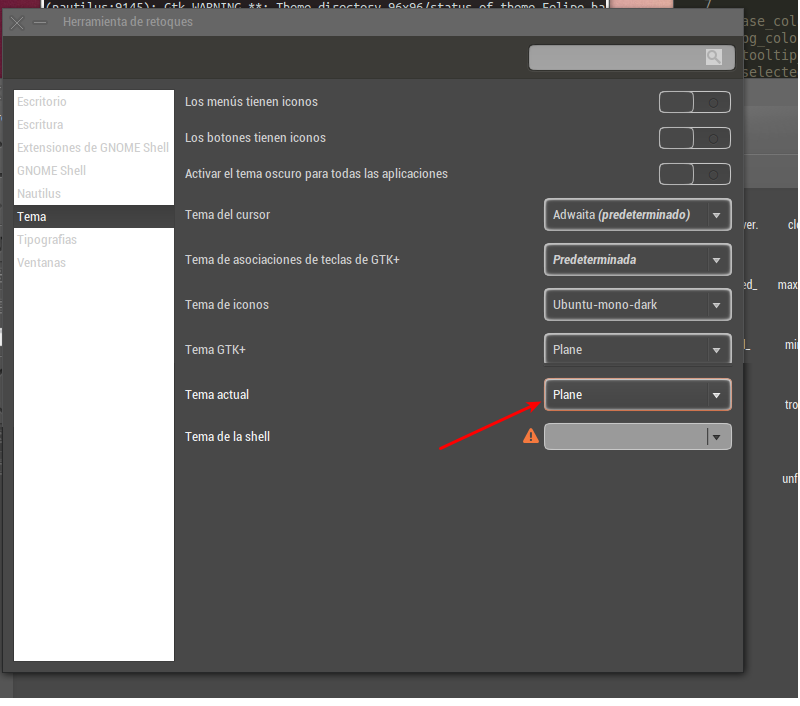
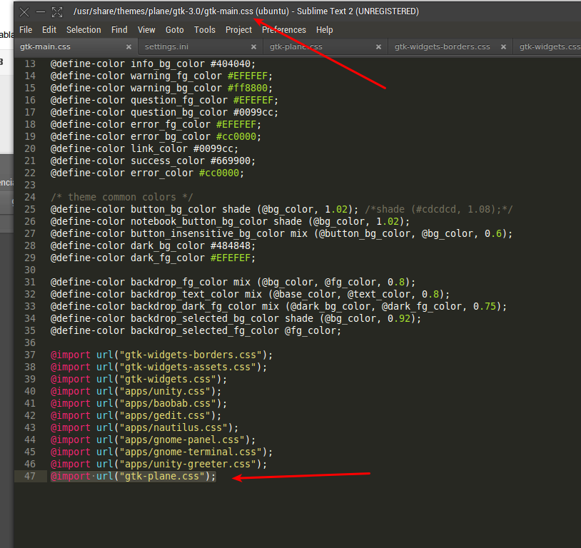
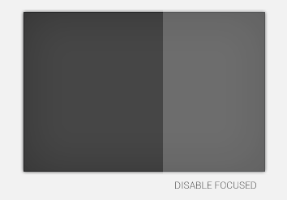

Llevo un tiempo tratando de personalizar el entorno de ubuntu, y bueno desde hace unos días vengo revisando donde encontrar los ficheros la documentación es relativamente poco alusiva de qué y dónde encontrar que elemento a editar, otro inconveniente es a la hora de aplicar los cambios, bueno en breve iré explicando uno a uno lo que he aprendido y en lo posible con el tiempo solucionando las dudas.
aclarando que no es un documento oficial el que pienso redactar ni la forma estricta de como editar el entorno gráfico ha y tambien que puedo estar errado de muchas formas.
Dia 1 por dónde comienzo?
fue mi primera duda y tras esta muchas mas, tales como: qué conocimientos debo de tener para hacerlo?, hay algun editor del entorno gráfico?, donde estan los archivos a editar?, hay alguna guia de como hacerlo?.
Bueno aca las respuestas:
Que conocimientos debo de tener para hacerlo?
Entre lo que investigue el entorno gráfico esta desarrollado en una combinación de: XML, CSS, imagenes: PNG, SVG. es poco el conocimiento específico que se debe de tener, tal vez actitudes de entornos usables, algo de lógica y estética te ayudaran a desarrollar algo bonito y usable.
hay algun editor del entorno gráfico?
Lamentablemente para unos no y en hora buena para otros. hasta ahora lo mas parecido en edicion del del entorno grafico es una herramienta para convertir algunos colores básicos: Theme editor, para el resto de opciones su amigo inseparable será un buen editor de textos, yo utilizo Sublime-text, dejo por aca el link de donde pueden encontrar más de este fabuloso editor.
Una herramienta que te puede ser util es esta Link, en el encontraras para instalar A widget Factory, es una herramienta para previsualizar el template como va quedando, si no tienes ni idea de como instlarlo sigue estos pasos:
en ubuntu 12.10 "recordar que cada linea es un comando la pegas en la terminal y le das enter"
sudo add-apt-repository ppa:valere-monseur/quantal
sudo apt-get update
sudo apt-get install awf
Para ejecutarlo en la terminal el siguiente comando:
sudo awf-gtk3
o
sudo awf-gtk2
si quieres ver como va quedando el tema en gtk2
donde estan los archivos a editar?
Hay dos partes donde encontrarás los archivos a editar, en la carpeta: /usr/share/themes/
y la carpeta: /home/nombre-de-tu-usuario/.themes siendo esta segunda carpeta la recomendada para crear o editar cualquier Theme.
hay alguna guia de como editar un theme de Ubuntu?
Actualmente no hay una guia oficial de como hacerlo, me imagino yo que sea por la forma en la que evoluciona el proyecto y actualizan códigos que no hay algo estandar.
en esta busqueda encontre el manual de referencia Link de los widgets, los widgets vienen siendo cada elemento del entorno gráfico tal como un botón, o una lista de selección.
aunque en breve trataré de de profundizar acerca de como editar a partir de un Theme existente.
Dia Dos
Bueno en el dia de hoy comienzo viendo una url: Gnome developer algo me dice que por aquí esta todo lo que necesito saber. un buen indicio en Gnome veo un link: Syle context esta sección esta muy interesante ya con estos recursos me dedicare a diseño de algo, bueno busco algo muy sobrio, un tema muy profesional, hay algo que no me acaba de convencer de Ubuntu y es su entorno aún es muy casual por decirlo así.. falta de sobriedad bueno esto lo digo a mi concepto, me gusta mucho el minimalismo y las cosas en su lugar por lo que me lleva a pensar en Android.. si android, hace unos meses vi que en la página de developers de android cuentan con su muy documentado diseño Link alli pueden informarsen de una forma bastante amplia para tener en cuenta sobre entornos y usabilidad, en el área de descargas encontré el Stencil y bueno que mejor partida para diseñar algo.
Me doy lucha entendiendo la plantilla o "theme" comienzo a hacer pruebs con los primeros diseños, el archivo settings.ini veo los colores en general, utilizando mi paleta de colores comienzo a modificar, algo que me di cuenta es que las variables que comienzan con nbg:"nbg_color:#484848" son colores de fondo y las "nfg_color:#efefef" son colores de texto.
Dia tres, cuatro, cinco, sies.
Fueron dias de poco tiempo para dedicarle al proyecto eh investicado un poco y eh encontrado lo siguiente:
Hay dos partes donde encontrarás los archivos a editar, en la carpeta: /usr/share/themes/ en esta carpeta necesitarás permisos de root para editar cualquier fichero o directorio, te podría ser útil en una consola (Ctrl + T) teclear:
sudo nautilus
Te pedira la clave de root y una vez ingresada abrirá una ventana que sera el gestor de archivos o nautilus desde allí podrás editar cualquier fichero ya que tienes permisos de superusuario.
Actualmente hay varios diseños en la versión de Ubuntu 12.10. me enfocare en el Theme Ambiance que es el diseño por defecto en esta versión de ubuntu. recomiendo hacer una copia de esta carpeta y nombrarla con cualquier otro nombre, en mi caso: "plane"
Manos a la obra.
El Primer Mes
El primer mes me consumió el tiempo las investiga entre este proyecto y otros que en el momento me generan ganacias mi trabajo y bueno otros deberes por fin logre tener un Diseño modesto para comenzar, recordando de tantos y tantos diseños que recuerde y utilizando como base algo ya construido decidí optar por arrancar desde el diseño base de android en su versión 4X, es un buen punto de partida ya que en se encuentran mucho de las bases a tener en cuenta en cualquier diseño y bueno como es libre, lo siguiente a hacer fue buscar todas estas piezas que hacen falta, piezas que en Ubuntu se llaman widgets, tales como Botones, frames...
Bueno aqui presento el resultado:

Segundo Mes
31 Dia: El segundo mes inicio ya buscando codigo y remplazando por mis diseños, el primer paso es ejecutar el explorador de archivos como root y asi me dirijo al directorio: /usr/share/themes/ , alli copio el tema Ambiance dandole el nombre: plane, ahora cambio el nombre del tema que esta en el contenido de: "index.theme" remplazo las partes donde dice "Ambiance" por "plane" sigo con darle permisos al directorio para trabajar comodamente, bueno ahora si manos a la obra y arranco con modificar los bordes de las ventanas, es algo laborioso ya que hay que remplazar las imagenes de la carpeta: /usr/share/themes/plane/metacity-1/ y luego a la carpeta "/usr/share/themes/plane/unity" , y por ultimo edito el archivo "/usr/share/themes/plane/metacity-1/metacity-theme-1.xml’ para ir viendo los cambios recomiendo utilizar el programa "herramienta de retoques"

32 Dia: Este dia comienzo a modificar estilo por estilo del archivo "usr/share/themes/plane/gtk-3.0/settings.ini" y a revisar donde se ve reflejado el cambio, para ello en una terminar abro nautilus y lo cierro con "sudo killall nautilus" asi borra la cache y se pueden ver los cambios. comienzo editando, aca les dejo unos comentarios de lo que hace cada variable:
base_color:#ffffff // color base del sistema si el tema es claro aconsejo dejarlo en blanco y si es oscuro del background
nbg_color:#f2f1f0 // background del sistema
ntooltip_bg_color:#000000 // tooltips "consejos" del sistema
nselected_bg_color:#f07746 // objetos seleccionados
ntext_color:#3C3C3C // color del texto de cajas de texto
nfg_color:#4c4c4c // texto en general del sitio.
ntooltip_fg_color:#ffffff //texto de los tooltips "consejos"
nselected_fg_color:#ffffff //texto de los objetos seleccionados
nlink_color:#DD4814 // color de los objetos resaltados
nbg_color_dark:#3c3b37 //color del los backgrounds del sistema cuando se pide en oscuro
nfg_color_dark:#dfdbd2 //color del los textos del sistema cuando se pide en oscuro
ya con esto se me iso mas facil editar el "usr/share/themes/plane/gtk-2.0/gtkrc" en las primeras lineas.
Pensando en las sostenibilidad del codigo y en ser lo maximo compatible con futuras actualizaciones en los templates decide eredar estilos, esto que significa, que no modificare directamente los estilos sino que creare un nuevo archivo lo ingreso al final del archivo "" asi podre actualizar futuros archivos y mi archivo de edición no se vera afectado.
Como en mi diseño no deje un color de background plano, como pueden ver tiene una sombra interna:

para ello eliminó todos los background y me voy por toda el "Object Hierarchy"
en el puedo ver desde donde se dibujan los elementos y editó el primer objeto que me controla las ventanas"GtkWidget", dandole el color de fondo y las sobras internas.